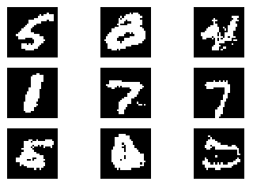
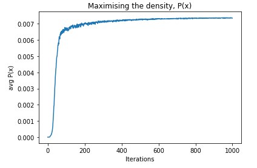
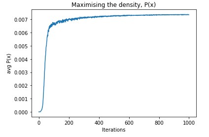
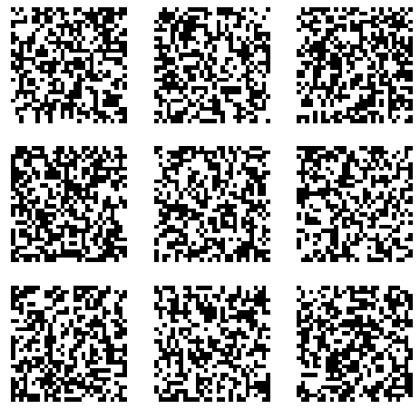
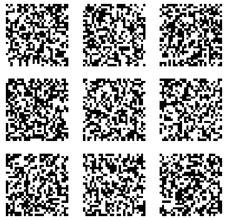

Learned priors
Using learned priors for compressed sensing can be formalised as; $$ \begin{align} \mathop{\text{argmin}}_x & \;\; \text{prior}(x) \text{ s.t. } \parallel f(x) - y \parallel_2 \\ \mathop{\text{argmin}}_x & \;\; \text{prior}(x) + \lambda \cdot \parallel f(x) - y \parallel_2 \tag{lagrange multiplier} \\ \end{align} $$ So, which tools from DL can be used to learn a prior based on the data? VAEs, GANS were explored with RIMs on the queue. (Note that VAEs and GANs use ground truth images, but do not exploit the knowledge of the forward process)GANs
I explored the properties of a simple 2d GAN. The generator takes a 1D noise signal and maps it into a 2D space. The goal is to learn to generate samples from P(x). However, the infamous mode-collapse-problem is present. This is significant in out setting because if a GAN has dropped modes then optimising $P_{gan}(x)$ will push $x$ towards only the modes captured by the GAN, which may be at the cost of modes not captured by the GAN.
 At initialisation, the gradients don't point anywhere useful and
the generator has been initialised spanning one of the modes.
At initialisation, the gradients don't point anywhere useful and
the generator has been initialised spanning one of the modes.
Unless the mode collapse problem can be reliably solved, GANs do not seem like a good idea. Note: there is a large amount of existing prior work here, see reading.md.
VAEs
I started with a VAE capable of producing good samples.  Then, to get an estimate of $P(x)$ I sampled from the posterior and used the prior to estimate the probability of those samples. $$ \begin{align} h_i &= f(x_i) \tag{encode $x_i$} \\ \end{align} $$ $$ \begin{align} p(x) &:= \mathbb E_{z \sim p(\cdot | h_i)} \left[ p_{prior}(z) \right] \tag{expected prior prob}\\ \end{align} $$ In the case where we define the latent space to be a univariate gaussian, $ h_i = \mu_i, \sigma_i $ and samples are taken from $ \mathcal N(\mu_i, \sigma_i) $ and the prior is defined to be $ \mathcal N(0, 1) $. Now that we can measure $p(x)$ we can optimise it to improve our reconstructions. $$ \begin{align} \hat x &= \mathop{\text{argmax}}_x p(x) \\ x_{t+1} &= x_t + \eta \frac{\partial p(x)}{\partial x} \tag{gradient ascent}\\ \end{align} $$ So using this estimate of $P(x) $ we can follow its density estimate towards more likely images. Thus filling is any missing information in an reconstruction. Let explore how it behaves.
 Despite and increase in $P(x) $, there is no obvious difference in the images. Similarly, below...

Despite and increase in $P(x) $, there is no obvious difference in the images. Similarly, below...

 The $x_i$s at initialisation (initialised as MNIST digits plus noise).
The $x_i$s at initialisation (initialised as MNIST digits plus noise).
 The $ x_i $s after 1000 steps of gradient ascent.
The $ x_i $s after 1000 steps of gradient ascent.
So the general problem seems to be that we can happily optimise P(x) (examples below), but an increase in P(x) does not necessarily to give us useful results. Why is this happening?
 
Images generated every 100 steps (left to right, top to bottom).

Images generated every 100 steps (left to right, top to bottom).

 Images generated every 100 steps (left to right, top to bottom).
Images generated every 100 steps (left to right, top to bottom).
In hindsight I am unsure the calculation of $p(x)$ makes sense. $f(x)$ is supposed to give an approximation to the posterior distribution, $q(z | x)$
$$ \begin{align} p(x) &= E_{ z\sim p(z \mid x) } \left[ p(z) \right] \tag{from above}\\ &= \sum_i p(z_i \mid x_i) p(z_i) \tag{!?} \\ \end{align} $$(but $h_i$ is a deterministic fn of $x_i$ so we should be able to use that!?)
Instead, we could calculate $p(x_i)$ as $$ \begin{align} p(x_i) &= E_{ z\sim p(z) } \left[ p(x_i \mid z) \right] \tag{likelihood of $x_i$ under our prior}\\ \end{align} $$(Note, this is pretty much just a parzen window)
Maybe this would work with a richer output distribution, rather than just a univariate gaussian? (intuition) problem is that even just adding a single pixel of noise might bring $p(x_i | z)$ down to zero.Parzen windows
Approximating a density function is a common goal of generative modeling. But there are some subtelties. Given the tip above, I had a play with parzen windows to see how well they
can be used to turn a VAE into a density estimate. A parzen window can be defined as;
$$
p(x) = \frac{1}{n}\sum_i^n k(x, \hat x_i)
$$
So, I used the hidden space of a VAE as the inputs to a parzen window (hoping
the the latent space would give greater generalisation).
Given the tip above, I had a play with parzen windows to see how well they
can be used to turn a VAE into a density estimate. A parzen window can be defined as;
$$
p(x) = \frac{1}{n}\sum_i^n k(x, \hat x_i)
$$
So, I used the hidden space of a VAE as the inputs to a parzen window (hoping
the the latent space would give greater generalisation).
 So using the equation above we can estimate the probability of data.
$$
p(x) = \frac{1}{n}\sum_{i=0}^n k(f(x), f(\hat x_i))
$$
So using the equation above we can estimate the probability of data.
$$
p(x) = \frac{1}{n}\sum_{i=0}^n k(f(x), f(\hat x_i))
$$
 Cool, we seem to have a nice structured estimate of P(x), with gradient pointing in meaningful directions.
But, using this parzen window we seem to get equal estiamtes of P(x) for images from MNIST and for generated (white noise) images.
Cool, we seem to have a nice structured estimate of P(x), with gradient pointing in meaningful directions.
But, using this parzen window we seem to get equal estiamtes of P(x) for images from MNIST and for generated (white noise) images.
 Ok, the problem is that the kernels are too wide and are allocating probability to locations further away from the data. Solution, reduce the width of the kernels.
Ok, the problem is that the kernels are too wide and are allocating probability to locations further away from the data. Solution, reduce the width of the kernels.

 The problem is now that the gradients don't point in any meaningful directions. They will simply lead you to the nearest data point.
The problem is now that the gradients don't point in any meaningful directions. They will simply lead you to the nearest data point.
Maybe there is an optimal tuning of the width to give desired results. But I didnt spend much time exploring this.
Future directions
Quick wins: Could try playing with Gaussian processes or Neural processes.
The code for RIMs exists in src, but it will take some more effort to reproduce the papers results.
There is no reason $\phi(x)$ must be explicitly representing a density. Rather, we could learn a sparse representation of the data and use this to regularise reconstructions to plausible images.